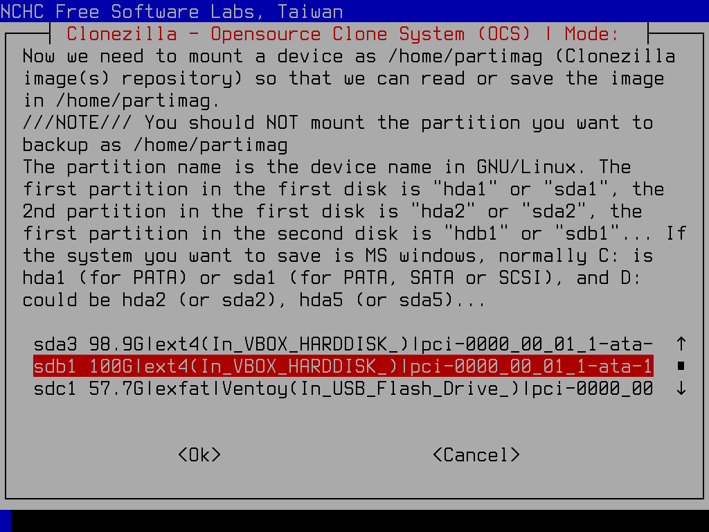

Backing up and Restoring your Linux System with Clonezilla
Introduction:
You've done it! You've made the switch. Maybe from something rather unpleasant, like Microsoft Windows (boo!), or maybe something obscenely restrictive, like Mac OS (double boo!). Today, you're a Linux user!
Congratulations. Welcome to freedom.
Why are backups important?
You now have great power over your computing life. But with that great power, comes the great responsibility of making sure your data is safe. This means performing regular backups. I can't convince you of the need for this, if you're not on board already. If you're of the 'backup skeptical' mindset, you will probably remain skeptical up until the hour when your beloved PC's hard drive dies, tragically deleting all the precious data you kept on your computer. At that point, establishing a good backup routine is too late. If you're reading this document, and questioning the need for backups, well I can only compare you to a curious four-year old, needing to touch a hot burner on a stove for yourself to find out that it's really, really hot. You make the mistake once, and it hurts so much, you are unlikely to make it again. The same goes for your need to backup your data. Most people don't realize how much it hurts to lose your data - at least not until you experience that data loss for yourself. Eventually, almost everyone comes around to the realization that backups are as inevitably important as going to the dentist and paying your taxes.
General approach
This document is Linux distro agnostic - it really doesn't matter if you went with Arch, or Ubuntu, or Fedora, or something else entirely. The concepts and mechanics of backup and restore are mostly identical.*
I'm going to run down the simplest path most users will follow first - backing up the entire contents of a single bootable hard drive, to an image file in another storage location. I will also briefly cover how to restore that backup to the same original OS drive, leaving it in a state where you can simply reboot your machine, and your OS will seem identical to what it was when you made the backup.
Please not that this is *NOT* the most time-efficient approach. It takes significantly longer to make a complete image of your drive than to simply copy your most important data to a backup location. It is also not the most space-efficient approach. You end up making copies of system applications and libraries, cache files, game files, and any number of other temporary artifacts that could possibly be re-downloaded or regenerated on the fly. Despite these drawbacks, however, this is far and away the SAFEST approach to backup. As long as you store your backup images in a safe location (ideally, duplicates of those images in multiple safe locations), you are virtually guaranteed that you can successfully resuscitate your system should disaster strike.
OK, so with those basics out of the way, here's what you will need:
Hardware requirements
- A PC-based system to backup. For the purposes of this document, I'm going to assume that system is a relatively modern PC, with a complete OS (or multiple OSes) installed on a single bootable drive. Ideally that drive will be formatted using the GPT partitioning scheme, and your motherboard will be configured to boot from those GPT-based partitions using a UEFI boot mechanism (this means, know it or not, that drive has a FAT-based ESP partition that contains all the .efi boot programs to get the system's bootloader up and running). A system like this is what lives on the PC of almost all modern Linux users. The same is true of almost all modern Windows systems (you could technically follow the instructions of this document if you only use Microsoft Windows, and you could achieve a quality backup and restore routine for that environment too).
- A USB flash drive (this will contain a live backup OS called 'clonezilla'). The clonezilla program (a downloadable .iso file) only takes up around 500MB, so you don't need a terribly large or expensive flash drive.
- A reasonably sized hard drive with a partition ready for your backup files. I'm personally using an external nvme enclosure, attached by USB4 to my main system's rear IO ports, but the hardware specifics don't matter to the procedure you follow - as long as that location can be somehow accessed, and ends up attached to your system, writeable by a normal Linux kernel.
That's what you need for hardware.
Software Preparation
These are the one-time steps you'll need to take to enable backup and restore:
- Download the clonezilla live backup software: Point your browser at Clonezilla Live's Downloads Page. Grab the latest stable version. When asked, you want to choose 'amd64' in the 'CPU architecture' drop-down, and 'iso' as the 'file type'. Most browsers will store the .iso file you download to your 'Downloads' folder.
- Write the ISO to your USB drive so it can be booted. There are a cornucopia of utilities you can use for this purpse - from the most basic 'dd' command, all the way to an advanced ISO booting system like Ventoy. If you don't know how to do this, I recommend using google and searching for the phrase "How do I create a bootable usb drive from an .iso file." It's out of the scope of this document to tell you how to do this - there are plenty of resources online you can consult.
Perform the Backup
- Delete as much unnecessary data as you can. While this step isn't 100% necessary, it will make your backup routine faster and more manageable. Move your steam games library to an external location. Look through your Downloads folder, and delete anything large that you can re-download, or just live without. If you have a folder for your source code, clean your larger projects (most makefiles have a 'clean' target that reduces the space taken up by temporary derived objects). You probably get the idea - try to trim down your system to be as lightweight as you can reasonably achieve.
- Connect your external storage drive to your system. If you are using a secondary drive already in your PC, then you can skip this step. The key here is to make sure you have an 'images' partition, formatted, with enough free space to store your image file. My Fedora-based system at the moment uses approximately 150GB of backup space for a complete image.
- Plug in your clonezilla USB drive (you might want to inspect your available ports, and pick one that's fast enough to make proper use of your USB drive's rated speed). Then reboot your system, leaving your newly created clonezilla USB drive plugged in (to use as the boot device). You will likely have to enter your motherboard bios utility, and set the clonezilla drive as your highest boot priority. Alternately, many motherboards have a function key quick bios option to let you perform a one-time override from a 'boot' menu, which is the approach I recommend.
- When the 'Clonezilla' branded grub boot menu appears (it will be white and orange, with the Clonezilla logo at the bottom), choose the first option labelled 'VGA 800x600', or, if you have poor close-up eyesight like me, you can choose the option with larger font.
- As the clonezilla app loads, the first prompt you receive is to choose a language. Pick appropriately.
- Optionally, you can change your keyboard layout if you're using one for a locale other than US English.
- Next you will have the choice to either 'Start Clonezilla' or 'Enter command line prompt'. Choose to Start Clonezilla.
- You will be prompted to pick a mode of operation - the target type of your clone. For this document, I'm assuming you have a storage drive (with a formatted partition) ready to receive a full image of your main OS disk. For this pick 'work with disks or partitions using images'.
- Next you are asked to assign where the image files will be saved. Choose 'Use local device (E.g.: hard drive, USB drive)'.
- Now the utility will start the process of having you specify the disk and partition to use. It gives you a chance now to connect an external storage device, so the program has time to recognize it. If you're using an external drive, and you've already plugged it in, or if you're using an internal device, you can skip this step and hit 'Enter'. Otherwise, if you haven't done so yet, plug in your external drive, wait about 5 seconds, and then hit 'Enter'.
- With all your drives plugged in and ready to go, the utility shows you all the available drives in the system. MAKE SURE THE DRIVE YOU WANT TO USE IS LISTED! Hit 'ctrl-c' to move on to the selection of your 'images' storage.
- Now you are prompted to pick the partition where you will store your OS image. Scroll through the list of available partitions, and make sure you pick the right one. Once you have your images partition selected, hit the 'Enter'.

- The utility will ask if you want to check your images partition for errors. It's probably safe to hit 'Enter' and go with the default (skip the check).
- The utility now allows you to pick a folder where your drive image will be stored. This isn't a terribly important step, as you can always move folders around later. By default, it selects the root folder of the partition. You're probably fine to just hit the 'Tab' key until the 'Done' button is selected (in red). Once you're done with this step, hit 'Enter'
- It shows the command it will run to mount the images partition, and how much disk space is free in that spot. Whoop de doo. Hit 'Enter' to move on.
- Now that you've got your images storage location specified and mounted, it's time to tell the utility what drive you want to copy. To this end, it first asks you if you're a beginner or expert. Be humble and hit 'Enter' with the beginner choice selected.

- You now specify how much of your disk to backup - the whole thing, or just one partition. Leave it at the default selection of the entire disk, and hit 'Enter'.
- You are prompted to provide your own name for the image (this will be a folder name). I usually just take the default, but pick what you want. Hit 'Enter' once you have a satisfactory name showing.
- It's finally time to select which drive you want to image. Use the arrow keys to change selection, and hit the 'Space' bar to pick one (it will mark your selection with an asterix '*'). When you have your OS drive marked, hit the 'Enter' key.
- Next you can choose the compression scheme for the image. Just take the default by hitting 'Enter'.
- Tell the utility if you want it to check the source drive for errors. I usually say it should skip the check, but it's probably a good idea to let it do it. Hit 'Enter' when you've settled on a choice.
- It similarly asks you if you want to check the saved image, once it's done with the backup, to ensure it could be safely restored at some point in the future. Unless you're particularly mission critical with your backup solution, you'll probably want to skip this check. Hit 'Enter' after you've picked if you want to check the image, or skip.
- The next prompt asks if you want to encrypt the image. I never say yes to this option, but you can choose otherwise. Hit 'Enter' after making your selection.
- Now you can opt to copy a log of the imaging process to the USB drive. Again I never say yes to this option. Arrow to your choice and hit 'Enter'.
- The final choice for your backup is of what action the utility should take on completing the backup - reboot, power down, or prompt for next action. Again hit 'Enter' after arrowing to your preference.
- Now the utility shows the full backup command it is ready to run, should you want to repeat it from command line, and skip all the backup wizard steps. Hit 'Enter' when ready.
- An 'Are you sure' message comes next, showing what partitions are about to be copied. Hit 'y' and 'Enter' to continue.
- During the clone process, you will see a status screen showing a graphical representation of the progress:
- When the image is successfully written to your backup area, you'll receive instructions on your options going forward - either staying in the terminal, or running an 'exit' or 'logout'. Hit 'Enter'.
- You're done with this backup! At this point I usually choose to poweroff.
Restore your Drive from a Previous Backup
Backing up your data is only half the story. You need to know how to restore your system, someday down the road when it goes belly-up. What follows are the steps to restore your OS drive from a backup image:
- Follow all the same steps, #1 through #16, from the previous section 'Perform the Backup'
- This time, however, instead of choosing the 'savedisk' operation, you'll arrow down and pick 'restoredisk' instead. Hit 'Enter' to continue.
- Arrow down to select the previous image you'd like to restore to the boot disk. Hit 'Enter' when you've decided.
- Next, pick the disk to restore (using arrow keys). Hit 'Enter' when done.
- When asked if you want to use the partition table from the image, generally say yes (just hit 'Enter').
- You have the option of checking the image before you restore it back to your disk. I usually arrow down to 'No, skip checking...', but it's perfectly fine if you want to double-check by choosing 'Yes' instead. Hit 'Enter' after making your choice.
- Just as you were given the option during backup, you can choose to store logs of the restore process to the USB drive. Hit 'Enter' after selecting.
- Again, as during backup, you specify what the utility should do once the restore operation is done. Hit 'Enter' after choosing your preference.
- Next you are shown the restore command line which the utility is ready to execute (should you wish to run it by hand next time). Hit 'Enter' to continue.
- You're shown which disk and partitions are about to be overwritten, and asked to confirm that you're certain you want to proceed. Hit 'y' and 'Enter' if you are certain. Then you're given the same prompt a second time, to make absolutely sure you're ready to restore.
- Once the restore is underway, you will be shown a progress screen for each partiton you write.
- Once the disk is successfully restored, the tool informs you of completion, and enumerates your options (to poweroff, reboot, etc...). Hit 'Enter'.
- Finally, after restoring, I usually choose to reboot and test that my system is back and running. Arrow to your preference, and hit 'Enter'.
*The one area that might be of concern is the bootloader, as I've only tested the software I'm showcasing (clonezilla) with systems that boot using the GRUB bootloader. I can't vouch for how well it works with other bootloaders (like systemd-boot).